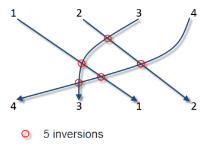

In what concerns the continuous evaluation solving exercises grade during the semester, you should submit until 23:59 of November 1st
(this exercise will still be available for submission after that deadline, but without couting towards your grade)
[to understand the context of this problem, you should read the class #04 exercise sheet]

The number of inversions of a sequence quantifies how far (or how close) the sequence is from being sorted. If the array is sorted in increasing order, then it has zero inversions. If on the other hand it is sorted in decreasing order, the inversion count reaches it maximum possible.More formally, we say that v[i] and v[j] are inverted if v[i]>v[j] and i<j.
For instance, the sequence (4,3,1,2) has 5 inversions: (4,3), (4,1), (4,2), (3,1) and (3,2).
Given a sequence of N distinct numbers, compute its number of inversions.
The first input line contains an integer N, the length of the sequence
The second line contains N space separated integers Si indicating the sequence itself.
The output should be a single line containing the number of inversions.
The following limits are guaranteed in all the test cases that will be given to your program:
| 1 ≤ N ≤ 50 000 | Length of the sequence | |
| 1 ≤ Si ≤ 109 | Numbers in the sequence |
| Example Input | Example Output |
4 4 3 1 2 |
5 |